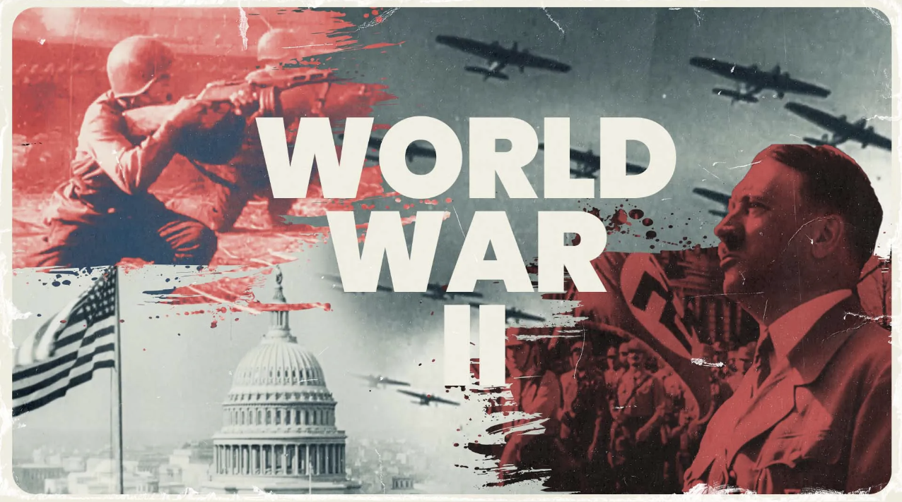
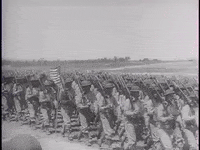
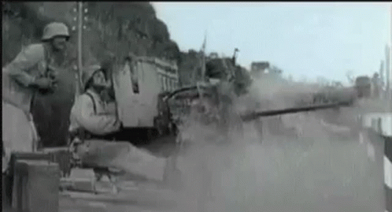
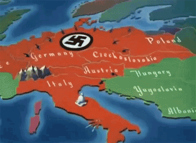
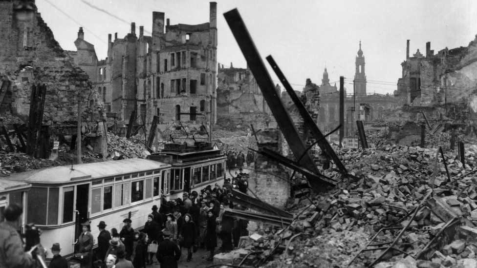

WWII

Introduction
Analysing the impact of World War II on individual countries is crucial for understanding the profound and lasting effects of one of the most significant events in human history. The war, which spanned from 1939 to 1945, reshaped political, social, and economic landscapes globally. Examining the specific hardships experienced by different nations allows us to appreciate the diverse challenges faced by societies and the varying degrees of recovery and resilience that followed. For the sake of simplicity, the analysis will focus on 8 significant countries that were the major powers in World War II. They are the Allied Powers: France, Italy, Poland, Soviet Union, United Kingdom and United States; the Axis Powers: Germany and Japan. Ultimately, I aim to determine which country suffered the most from World War II by analysing the percentage of casualties and the allocation of military resources.
Casualties

Firstly, the analysis sheds light on the immense human toll exacted by the conflict. Casualty figures reveal the staggering cost borne by populations. Understanding the extent of human suffering emphasizes the social and political damage of World War II.
Click on the bars to show the percentage and count of deaths.
The top 4 countries that suffered the most deaths are Soviet Union, Germany, Poland and Japan. Soviet Union accounts for 59.4% of the total casualties, while Germany and Poland account for 16.3% and 13.2% respectively. Japan accounts for 6.8% while the rest of the countries each account for less than 1.5% of total deaths.
Allocation of military resources

Moving on, the analysis of military resources allocated to World War II is crucial in finding out the economic loss by each country. Analyzing military resources sheds light on the economic mobilization efforts, war production, and the overall economic strategies adopted by nations during the conflict.
Analysis by percentage
Click on the bars to show the percentage and count of deaths.
Aircraft
The top 3 countries with the most types of aircraft used are the U.S, Japan and Germany. The U.S devoted the most crafts, accounting for 22.8% of the total types of aircraft. Second and third are Japan and Germany, with 22.5% and 16.4% respectively.
Ships
The top 3 countries with the most types of ships used are the Germany, the U.S and Japan. Germany devoted the most ships, accounting for 54.6% of the total types of vehicles. Second and third are the U.S and Japan, with 27.0% and 8.8% respectively.
Vehicles
The top 3 countries with the most types of vehicles used are the Germany, the UK and the U.S. Germany devoted the most vehicles, accounting for 21.0% of the total types of vehicles. Second and third are the UK and the U.S, with 19.3% and 15.5% respectively.
Weapons
The top 3 countries with the most types of weapons used are the Germany, the U.S and Japan. Germany devoted the most weapons, accounting for 88.0% of the total types of vehicles. Second and third are the U.S and Japan, with 17.6% and 14.8% respectively.
Types of military resources
The table below shows the specific types of military resources used by each country
Here, I will explain the reasons for the data above, with reference to the top country in each type of military resources.
Aircraft
The United States used the most types of aircraft because of its global commitment and the remoteness of battleground. Even before the U.S formally entered the war, it provided significant military assistance to Allied nations through the Lend-Lease program. This included the supply of aircraft to countries like the United Kingdom, the Soviet Union, and others, contributing to the overall number of aircraft used by the Allies. After the Japanese attack of the Pearl Harbour, the U.S became directly involved in both the European and Pacific theaters of the war. However, the actual war zones were relatively far from the U.S ground. Therefore, a large and diverse air force is required to support military operations on multiple fronts. Specifically, the U.S strategic bombing campaigns in Europe and the Pacific required a substantial number of aircraft. The B-17 Flying Fortress and the B-24 Liberator, among other bomber models, were extensively used in these campaigns. The Pacific Theater of the war involved extensive naval and air operations, including carrier-based aircraft. The U.S. Navy’s aircraft carriers played a crucial role, and the U.S. produced a large number of carrier-based aircraft, such as the Grumman F6F Hellcat and the Douglas SBD Dauntless.
Ships
Germany used the most types of ships, particularly submarines (U-boats) because of their costs and Germany’s geographical location. The defeat in World War I took a heavy toll on Germany’s economy and industrial capacity. U-boats were seen as a cost-effective means and therefore were prioritised over large surface fleet. Moreover, Germany’s location in Europe allowed U-boats relatively easy access to the Atlantic Ocean and the North Sea. Coastal waters provided natural hiding places for U-boats to operate from and return to. This allowed Germany to launch surprise attacks on the Allied Powers.
Vehicles

Germany used the most types of vehicles because of their Blitzkrieg tactics. The Blitzkrieg (lightning warfare) tactics required highly mobile and mechanized forces. The German military emphasised the rapid movement of troops and equipment, and this approach necessitated a significant investment in various types of vehicles. For instance, the Wehrmacht, (Panzer division) was the key element in Germany’s success in the Blitzkrieg tactics. They heavily relied on mechanized units, which were equipped with armored personnel carriers and infantry fighting vehicles for transport and combat.
Weapons

Similar to Germany’s devotion to the use of vehicles, the Blitzkrieg tactics also emphasised rapid and coordinated attacks by combined arms, including infantry and tanks. This required a diverse array of weapons.
Infantry Weapons: Germany developed and deployed a range of infantry weapons, including rifles, machine guns, and grenades. The emphasis on mobile infantry tactics contributed to the variety of weapons used by German ground forces.
Artillery and Artillery Tactics: Germany utilised various artillery pieces and had effective artillery tactics. The development of weapons like the Nebelwerfer (rocket launcher) and other artillery innovations contributed to the diversity of their arsenal.
Conclusion
Bomb-damaged Dresden is pictured here in March 1946.
By considering the percentage of deaths and military resources among the 8 significant countries, I conclude that Germany suffered the most from World War II. Germany accounted for the second most number of deaths, and the most types of ships, vehicles and weapons used. Although the Soviet Union had suffered the most casualties, they did not devote much military resources into the war. On the other hand, the high devotion by Germany had damaged their economy, which also impacted the Germans’ standard of living. This is especially so when we take into consideration the loss and damage due to World War I. Moreover, World War II took place directly on German ground, affecting the welfare of local Germans. Therefore, by considering the casualties, military devotion and the welfare of local Germans, Germany suffered the most from World War II.